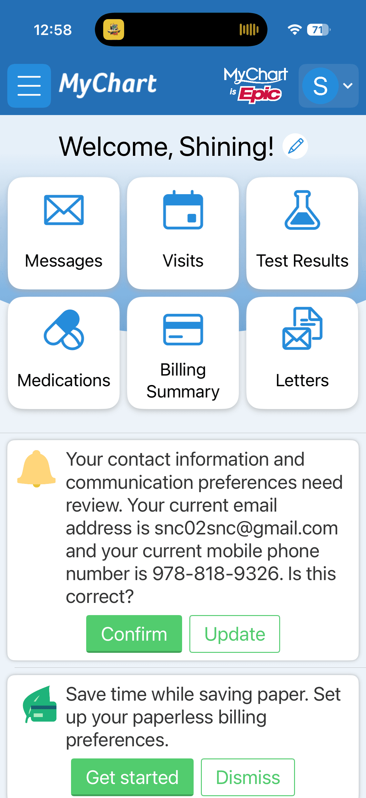
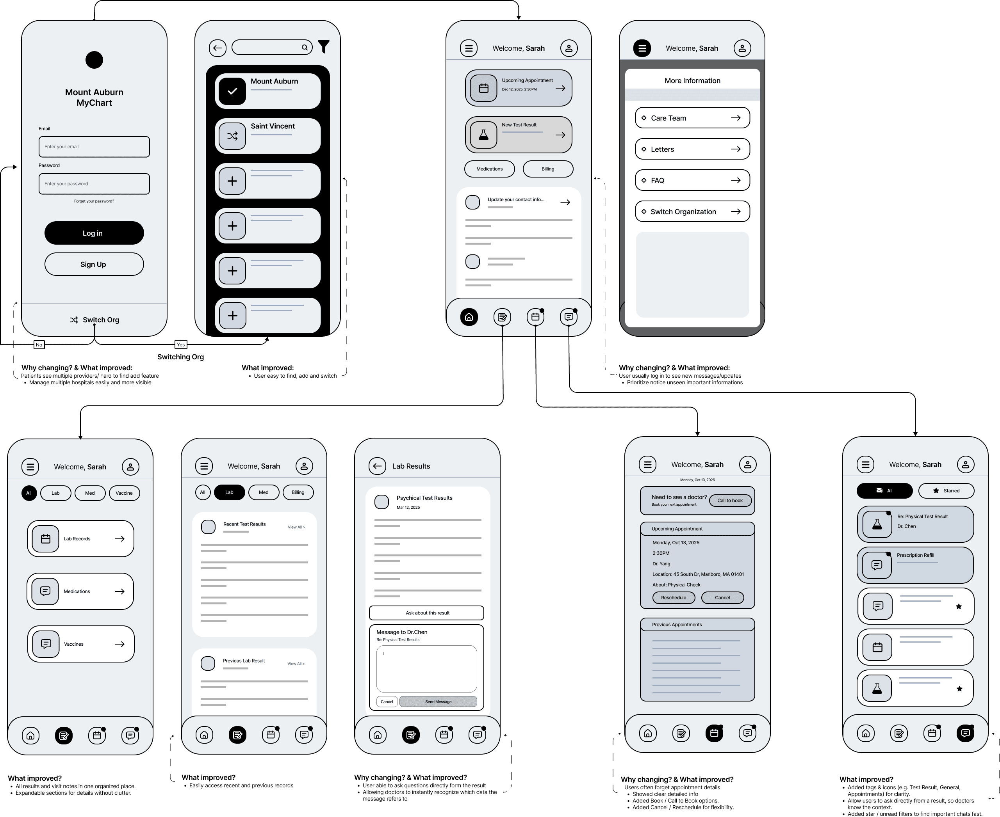
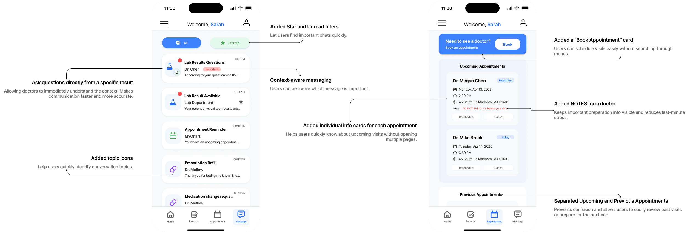
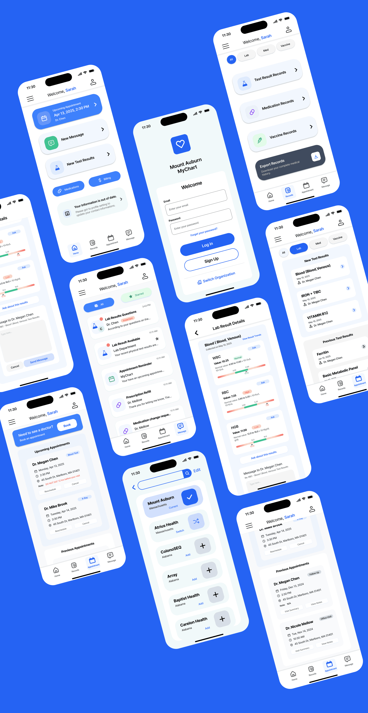

ADDITIONAL CASE / INDEPENDENT PROJECT · HEALTHCARE
MyChart
A heuristic-led patient portal concept for clearer scheduling, records, and next actions.

01 / OVERVIEW
A clearer starting point for health tasks.
I evaluated MyChart and redesigned navigation, appointment access, and record browsing as an independent UX research and design project.
MyChart is a patient portal for accessing health information and care-related tasks. This is an independent concept, not commissioned client work.
02 / PROBLEM / USER CHALLENGE
Health tasks begin with too much navigation.
My heuristic review identified 3 issues: fragmented provider sign-ins (consistency), database-style menus (recognition and navigation), and lab results with little explanatory context (understandable feedback). Formal severity ratings are not documented.
Evidence and limitation
These are evaluation findings, not validated patient outcomes. Informal conversations with classmates who use the app added feedback; structured patient testing has not been conducted.
Design direction
Prioritize clarity, control, and empathy: make common actions visible and connect results to a next step.

03 / SOLUTION
Organize around what patients need to do.
Start with hierarchy
I explored grouping and navigation in wireframes before applying visual styling.

Make common actions visible
Quick-access cards surface appointments, messages, and results. Four-tab navigation and grouped records with filters reduce the number of places to search.
Connect information to action
The concept brings provider access together and adds record export, result-range indicators, and a way to ask about a result. The intended benefit is clearer next steps, not a proven clinical outcome.

View interaction and visual design boards



04 / IMPACT / OUTCOME
A redesign concept, with patient validation still ahead.
Deliverables include the heuristic evaluation, wireframes, interaction annotations, and final visual designs. Informal feedback came from classmates who use the app.
The concept has not been tested with patients in a structured study. No usability improvement or reduction in anxiety is claimed.
Task observations and before-and-after refinements after patient testing.
05 / OPPORTUNITIES / TARGET USERS
Evaluate understanding as well as navigation.
The design targets patients managing appointments, messages, and records while their attention may be limited.
A proposed test would ask patients to find a recent result, explain what they believe it means, and identify their next action. Also test scheduling and record retrieval without assistance.
06 / REFLECTION
A calmer interface still needs clear meaning.
Reducing menus helps only if people can understand the information they reach. Range indicators should support interpretation without implying medical advice.
Next, validate comprehension and navigation with patients, refine the hierarchy from observed difficulties, and distinguish interface clarity from health outcomes.